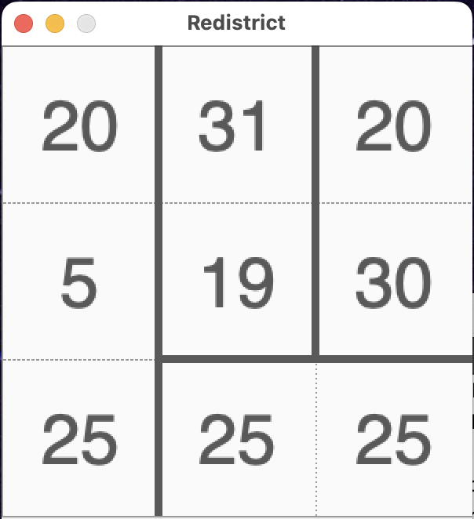
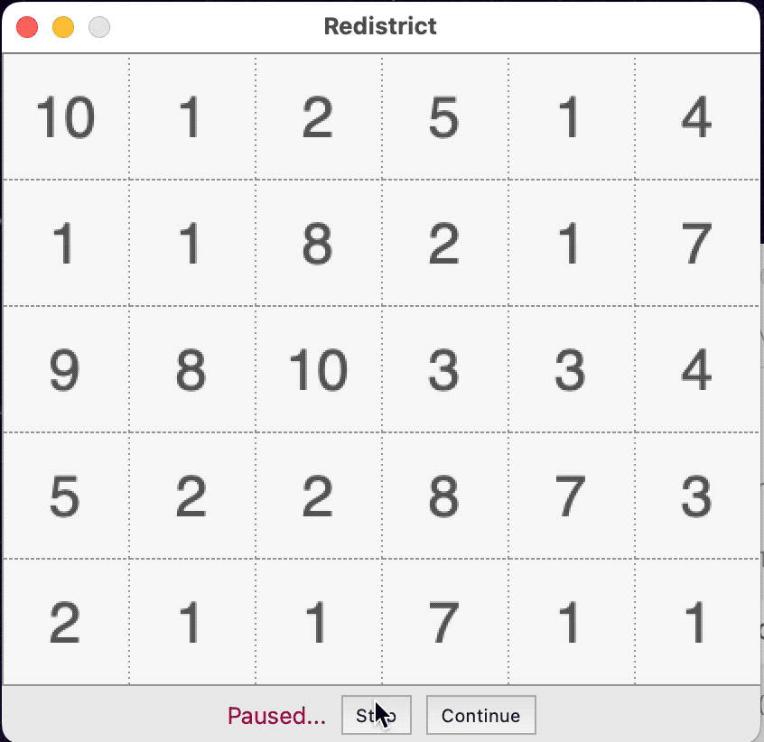

One person, one vote
Every ten years, the US Census undertakes a count of the population of each state. Using those updated counts, states perform the once-a-decade redrawing of electoral districts. The outcome of redistricting is crucial because it can influence who gets elected, how various communities are represented, and the ways public resources are distributed.
Redistricting divides a state into geographical districts of equal population size. If California is apportioned 52 districts for 39 million residents, each district contains 750,000 people. The "One person, One vote" principle affirmed by the Supreme Court requires that all districts must be equally-sized, but outside of that basic constraint each state determines for itself how to prioritize other characteristics such as shape, alignment with geographical features, compactness, community cohesiveness, or party affiliation. There is considerable debate on what makes a redistricting "fair", how to balance across different metrics, and what mechanisms can confirm that the process is conducted without shenanigans.
For as long as America has been a country, political forces have sought to manipulate district lines to advance one political party or another. This process, known as gerrymandering, has worsened in recent years, in no small part because the growth in computer capabilities and rise of sophisticated algorithms has empowered mining of voting data and optimizing outcomes for nefarious goals. Not a good look for us as computer scientists! Let's instead put our formidable skills to work for good by implementing a transparent and sound redistricting algorithm that does not permit bad actors to manipulate the outcome.
Horizontal-Vertical Splitline (HVS)
Mathematician Warren Smith of the Center for Election Science proposed an elegant geometric approach for redistricting, the Shortest-Splitline Algorithm. It operates by splitting the state into two equal halves using the shortest straight line, then recursively splitting the sub-partitions until no further partitions are needed. Smith's algorithm generates tidy, compact districts with straight-line internal boundaries.
Brian Langstraat proposed a refinement into the Shortest Latitude-Longitude Splitline Algorithm that only considers those splitlines that are horizontal or vertical. Langstraat's version results in every district being rectangular in shape and all boundaries lie on the latitude and longitude lines.
The approach you will employ for the assignment is a further simplification that we call Horizontal-Vertical Splitline (HVS). We use a Grid to represent the population of the state; each cell in the grid is a count of residents in that location. The HVS algorithm attempts to divide the grid into N rectangular districts (subgrids) of equal population by making only horizontal and vertical cuts. Read on to hear more about how it works!
Your task
The function canRedistrict is given two arguments, a Grid<int> (population density grid) and nDistricts (number of districts), and returns a true/false result which indicates whether the HVS strategy finds a valid redistricting of the state's population into nDistricts of equal size.
bool canRedistrict(Grid<int>& state, int nDistricts)
Each grid cell is the number of residents that live in that location of the state. The code below declares a 3x3 population grid for nevada. The total population is 20 + 31 + 20 + 5 + 19 + 30 + 25 + 25 + 25 = 200. If nevada is apportioned 4 districts, the target size for each district is 50 people (200/4).
Grid<int> nevada = { {20, 31, 20},
{ 5, 19, 30},
{25, 25, 25} };
canRedistrict(nevada, 4) => returns true
This image shows a valid HVS redistricting that divides the grid into 4 rectangular districts of size 50:

The wyoming grid below is an example for which the HVS algorithm cannot find a valid redistricting. The total population is 40 and nDistricts of 2 means the target size is 20. On a 2x2 grid, there are only two possible splits to consider (one horizontal, one vertical). Neither split produces subranges that can be divided into districts of the target size 20, so the algorithm fails to find a solution and returns false.
Grid<int> wyoming = { {10, 15},
{ 5, 10} };
canRedistrict(wyoming, 2) => returns false
At each recursive step, the HVS algorithm chooses a single horizontal or vertical cut. This divides the grid into two subranges. The subranges are processed recursively to determine if they can be further divided into districts of the target size. The recursion continues until no further subdivisions are needed (success!😎) or no further divisions are possible (failure😢). On failure, the previous division is undone and the algorithm moves on to try other alternatives. HVS is an ideal fit to the classic recursive backtracking template, just the thing for a young padawan to practice on!
Suggestions on recursive strategy
- Base cases: stopping conditions for success and failure
- Success: sum of the population in current range equals the target district size. Woohoo, this is a valid district!
- Failure: sum of the population in current range is not a multiple of the target district size. There is no successful solution down this path.
- Recursive case: make one split and recurse
- Choose a horizontal or vertical splitline to apply to the current range
- Apply the splitline to divide into two subranges
- Redistricting a subrange is just a simpler instance of the original problem. (We see you,👀 self-similarity!)
- Recurse on the two subranges, if success on both, great!
- If not, backtrack, unchoose and try a different splitline
- If all splitlines explored and all ended in failure, return false to trigger backtracking out of earlier decisions
- Helper/wrapper functions
- You will almost certainly need at least one recursive helper function.
- Consider what additional information will be needed on each recursive call, such as which subrange is being explored and the target district size. What else? Any additional state you need can be passed to the recursive calls by adding parameters to your recursive helper.
- You can choose the names, parameters, and return type of any helper/wrapper functions you add. However, do not change the prototype of function
canRedistrict; it must exactly match as we declared it.
- Additional data structures
- The only result of the function is a
boolthat indicates whether a valid redistricting was found. - You do not need to print or store the collection of districts/divisions. We intentionally made this simplification to avoid introducing a complex nested structure that might distract you from the recursive algorithm we want you to focus on.
- Additional
Grids,Vectors,Sets, and the like are not needed and should not be used. Eschew supererogatory complexity!
- The only result of the function is a
- Assumptions
- Each grid cell represents the count of residents for that location. You may assume that each cell count is >= 0 and that the sum of all counts in grid is > 0.
- You can assume that the arguments to the original call
canRedistrict(grid, nDistricts)are such that the sum of all values in entiregridis evenly divisible bynDistricts, i.e. there is a valid target size for the redistricting to be attempted. (In many cases, your function might already return false if not divisible, but we don't want you to go out of your way to make a special case for it). You can further assume thatnDistrictsis > 0.
GridLocationRange
In the Maze assignment, you made heavy use of Grid and GridLocation. An additional companion type that you will use for this assignment is GridLocationRange. A GridLocationRange delimits a rectangular block of grid locations. It is a compact reference to a rectangular subgrid within a Grid. A range is defined by its start location in the upper left corner and its end location in the lower right. All grid locations between the start and end locations (inclusive) are included in the range.
The code below demonstrates some sample use of the GridLocationRange:
// Declare a GridLocationRange
// Can init by assigning start location r0c0 and end location r3c2 (inclusive)
GridLocationRange range = { {0, 0}, {3, 2} };
// Alternative syntax to init using GridLocationRange constructor
GridLocationRange other = GridLocationRange(1, 1, 2, 1);
// Examples of some GridLocationRange operations (see docs for more info)
int numRows = range.numRows(); // there are 4 rows in this range
int numLocations = range.size(); // there are 12 locations in this range
GridLocation upperLeft = range.startLocation(); // upper left is r0c0
int endCol = range.endCol(); // end column is 2
// Iterate over all locations in the range
for (GridLocation loc: range) {
cout << grid[loc] << endl; // print grid value at loc
}
Here is the Stanford Library documentation for GridLocationRange.
The importance of decomposition and independent testing
Decomposition is one of your best tools for managing complexity. Our key recommendation is that you decompose side tasks out of the recursive algorithm and into helper functions. For example, a helper function that sums the values within a subgrid would be useful. We also recommend helper functions that apply a vertical or horizontal split line to a range to compute the two subranges.
Designing and writing helpers for these tasks is a good place to start on the assignment. You can work on each helper as an independent unit, write comprehensive test cases for it, debug any issues in isolation, and confirm all is well before moving on.
Write many student test cases that subject your helpers to rigorous testing to confirm they work correctly in all cases. When you are in the middle of writing the recursive algorithm, you need to be able to call your helpers with confidence. Having abstracted away the mechanics also makes it easier for you to focus on the recursive algorithm without getting mired in those details or distracted by side issues. There is nothing more sad than seeing a student deep on a wild goose chase to diagnose what appears to be a problem in their recursion that is actually just a bug in a helper function that was not uncovered in testing beforehand.
We are so confident that these helpers will be valuable that our starter includes suggested prototypes and one sample test case. Modify and extend on these suggestions as you see fit. While not strictly required, we think our advice is solid and we hope you follow it!
Graphics (optional)
As the HVS algorithm is chugging away and trying various splits to find a valid redistricting, you may be wishing you could follow along to ensure your algorithm is working as you intend. One good option is running under the debugger as you did in the warmup and using Step Into, Step Over, and Step Out and observe how the variables change. As the recursion gets deeper and more complex, single stepping can become tedious; being able to zoom out and see things at a high level would be handy. We thought an animation that shows the progress of the algorithm visually could be neat, so we wrote some graphic support routines that you can try out. This is entirely optional, but using them may help with your debugging and testing and just generally make the program more fun.
The provided gridgraphics module has function to display the grid and split lines. Read the gridgraphics.h header file for more details about:
initForPopulationGrid(Grid<int>& g, bool pauseForClick)drawVertSplit(Grid<int>& g, GridLocationRange range, int nLeftCols)drawHorizSplit(Grid<int>& g, GridLocationRange range, int nTopRows)void waitForCloseWindow()
The general idea is to call initForPopulationGrid once before starting the recursion. During the recursion, each time you choose a horizontal/vertical split to apply, call drawVertSplit or drawHorizSplit to highlight the current range and display the split line in the graphics window.
Note that the animation can makes things pokier, especially for large grids, and the graphical subsystem on Windows is extra-slow relative to macOS/linux. It may be best to use animation only when solving smaller-size grids.
There is no expectation or requirement that canRedistrict animate its process, our testing is solely confirming it correctly reports whether an HVS split was found or not. Using the graphics is entirely optional – if you don't think it will be valuable or you find it that it introduces more problems than it solves, just skip it.

Ethical considerations
The HVS redistricting algorithm was proposed by mathematicians applying computational techniques to the end of producing auditable, unbiased outcomes. But these same techniques could instead be directed to less noble ends. In recent years, computational tools that leverage concepts like those you are learning in CS106B have been used to gerrymander district maps to an extent that has never been seen before. The negative consequences of gerrymandering are immense. Heavily gerrymandered districts often result in disenfranchisement (loss of voting impact) of large swaths of a state's population and often disproportionately disenfranchise people of color, economically disadvantaged people, and others whose voting voices have historically been suppressed.
In CS106B, you are learning techniques that will allow you to solve a wider range of problems and do so correctly and efficiently – cool! But along with developing that problem-solving prowess, we want you to be thinking critically about how you will apply these powers to developing solutions that also are socially aware and ethically responsible.
Q9. A leader of a political party in your hometown learns you just took CS106B. They offer you a job working on cutting-edge software that applies algorithms to optimize gerrymandering during the process of redistricting.
What questions might you ask about this job before making a decision? What might be the drawbacks? Which communities would be affected by the work you're doing?
Please write your list of 3-5 questions and be sure to include ethical considerations.
References
- Comparison of districts from Shortest Splitline division to gerrymandered districts drawn by politicians https://rangevoting.org/GerryExamples.html
- "Can You Gerrymander Your Party to Power?" Neat interactive visualization of gerrymandering techniques from the New York Times https://www.nytimes.com/interactive/2022/01/27/us/politics/congressional-gerrymandering-redistricting-game-2022.html
- "Gerrymandering Is Illegal, but Only Mathematicians Can Prove It" https://www.wired.com/2017/04/gerrymandering-illegal-mathematicians-can-prove/
- The Center for Election Science is a nonpartisan nonprofit for research and advocacy of rigorous, science-informed approaches to voting reform https://electionscience.org/
- Make your vote heard in the upcoming November election: Register, research, volunteer with Stanford Votes!